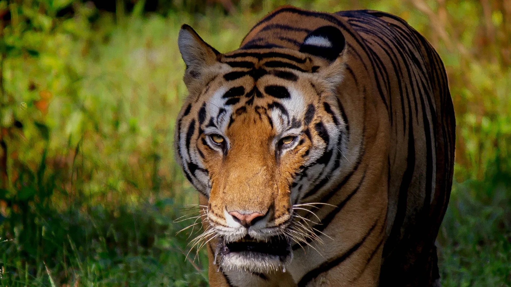
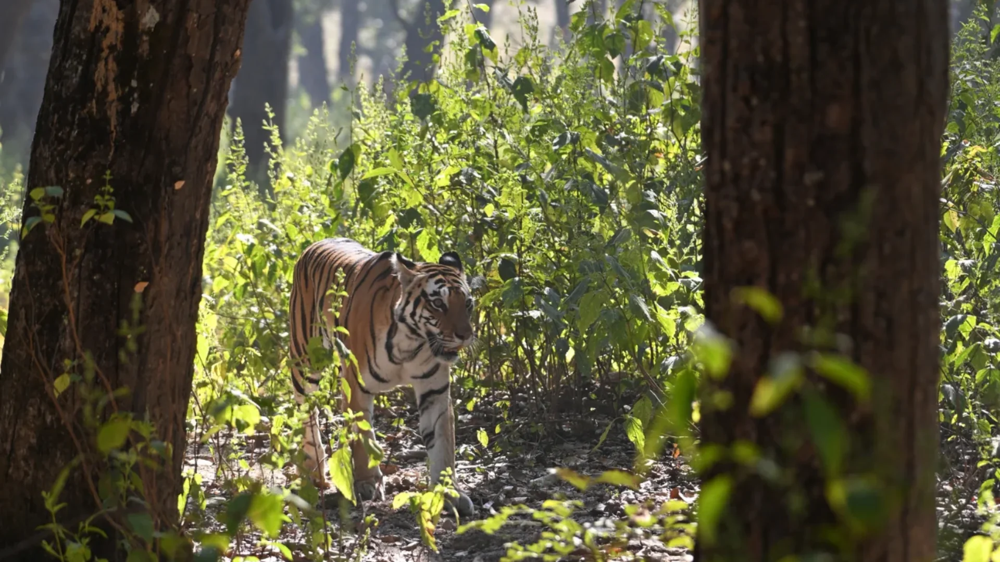
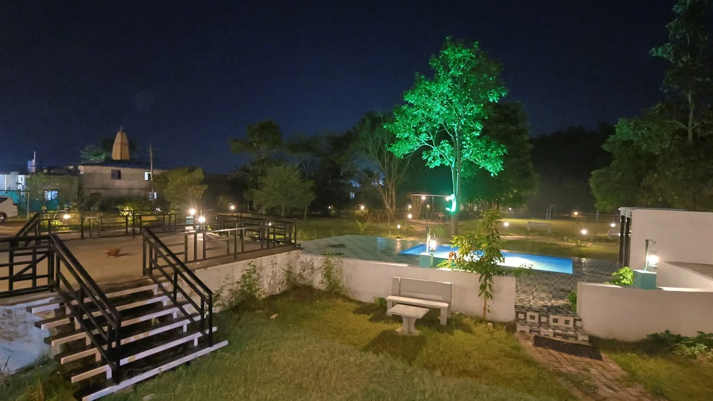
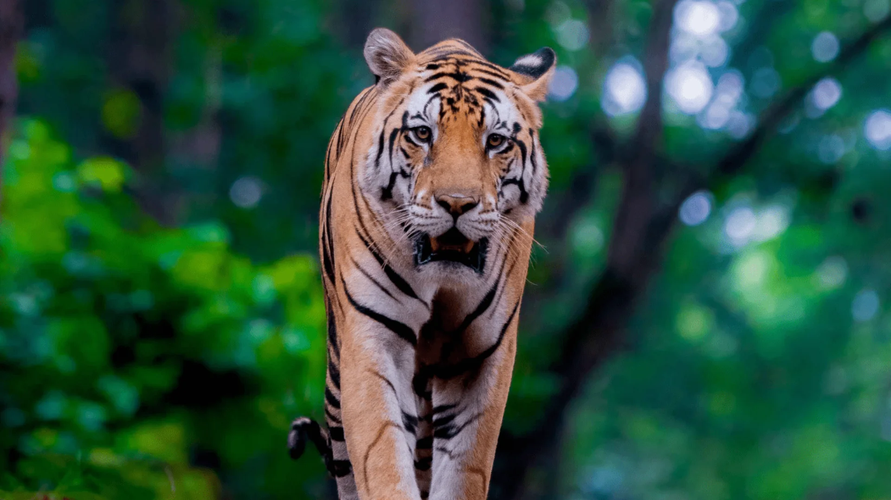
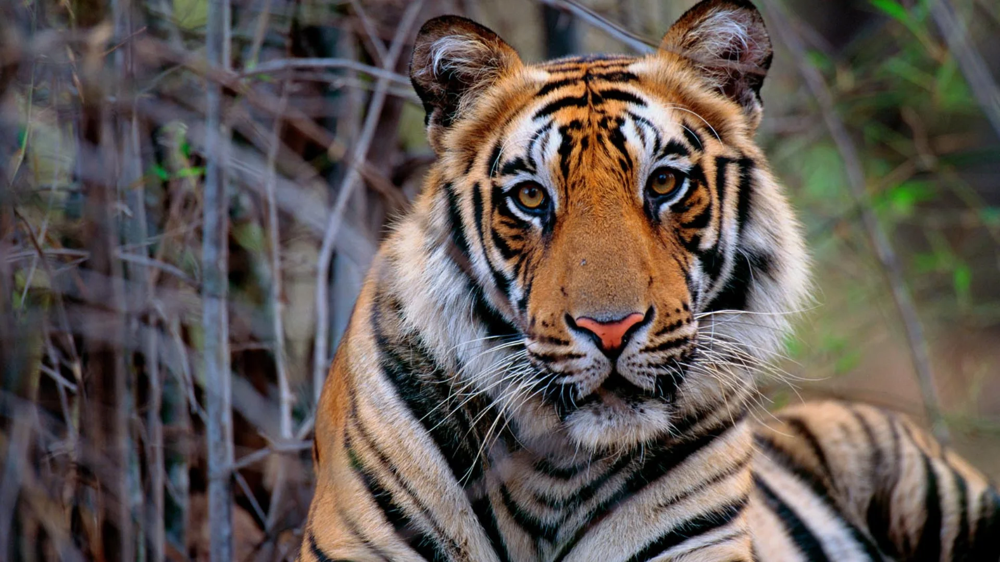
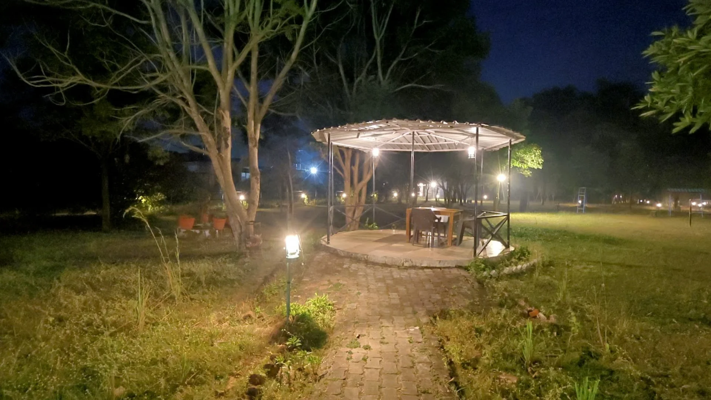

Best Time to Visit Kanha National Park for Tiger Sightings
Month-by-month breakdown of weather, tiger activity and safari availability to help you pick the perfect window — from November's misty meadows to April's dust-bowl sightings.
Plan My Trip14+ years of on-ground experience, packed into long-form stories. Plan better, travel deeper.

Month-by-month breakdown of weather, tiger activity and safari availability to help you pick the perfect window — from November's misty meadows to April's dust-bowl sightings.
Plan My Trip
An honest, on-ground comparison of Kanha's two flagship zones — terrain, tiger density, sighting timings, photographer access and which is best for first-timers.
Plan My Trip
From neutral-coloured clothing and binoculars to telephoto lenses and the right monsoon gear — our naturalists' tried-and-tested packing list.
Plan My Trip
The inspiring conservation story behind Kanha's iconic hard-ground swamp deer — once under 70, now thriving at over 800. The people, policies and partnerships that made it possible.
Plan My Trip
200mm, 400mm or 600mm prime? Our resident photographer breaks down the best lens kits for Kanha's lighting conditions, jeep limitations and tiger behaviour.
Plan My Trip
Yes, a tiger safari with kids works beautifully — here's our 4-day family-tested itinerary with child-friendly resorts, short safari drives and buffer-zone fun.
Plan My Trip